B2B
Manager
portal
B2B SaaS · Product Hackathon · 2025
One workspace for requests, claims, and construction-project analytics.
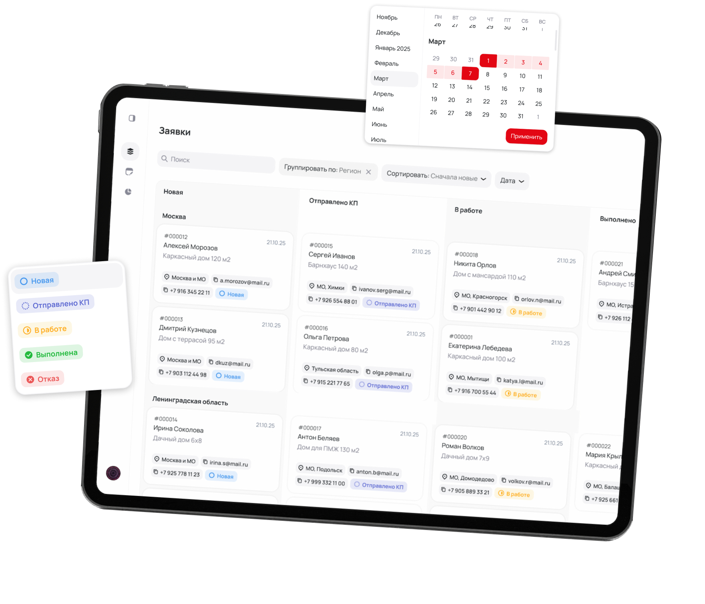
Collect disparate requests into a manageable process
Applications came through Telegram, WhatsApp, mail and calls - managers lost context, statuses and time.
For businesses, this meant lost leads, opaque processing and lack of data on the reasons for refusals. For the client - disturbing communication in personal chats and the absence of an official complaint script.
The solution was an internal account with a single register, application life cycle, related claims and process analytics.
Collect
All requests and client data in one work area.
Carry out
Clear statuses, actions and responsibilities at each stage.
Measure
Dynamics, reasons for refusals and sources of leads for the manager.
Three days required choosing the main thing, and not designing everything
Instead of a full exploration, the team focused on key operational scenarios and turned the brief's constraints into testable design hypotheses.
Customer brief
Defined business tasks, roles and mandatory system scenarios.
JTBD according to brief
Helped connect process issues to manager objectives and value.
3 days to decide
We focused on the solution through JTBD, without deep research and testing.
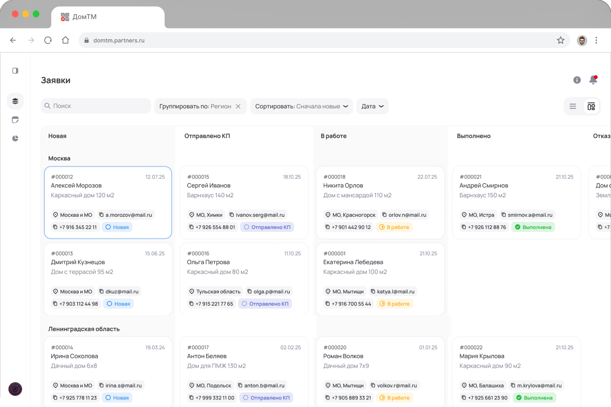
Jobs to be done
Each mechanic responds to a specific process loss
Find an application without changing channels
Unified register, search, filters and sorting.
Restore context in a few seconds
Side panel with data, documents, calls and correspondence.
Understand the stage and next action
Statuses and two views of one life cycle.
Control controversial situations
A claim as an independent but related object.
Find department bottlenecks
Analytics of dynamics, failures, sources and regions.
Architecture
Three modules share tasks while maintaining a common context
After logging in, the manager works with one of three screens: applications, claims or analytics.
01
Working with applications
Registry, kanban, filters, side panel, comments, documents and status changes.
A single list reduces the search
All sources converge in one registry with filters and mass actions.
Sidebar preserves context
Details open on top of the list without going to a separate page.
Two views support two roles
The table helps analyze volume, kanban helps manage stages.
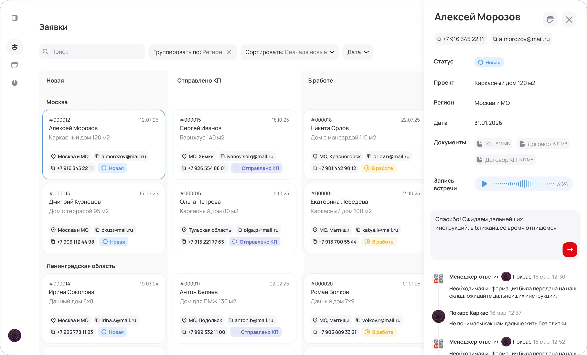
02
Dealing with complaints
Creation, materials, connection to the original application and its own life cycle.
The claim gets its cycle
The dispute remains related to the application, but is not confused with it.
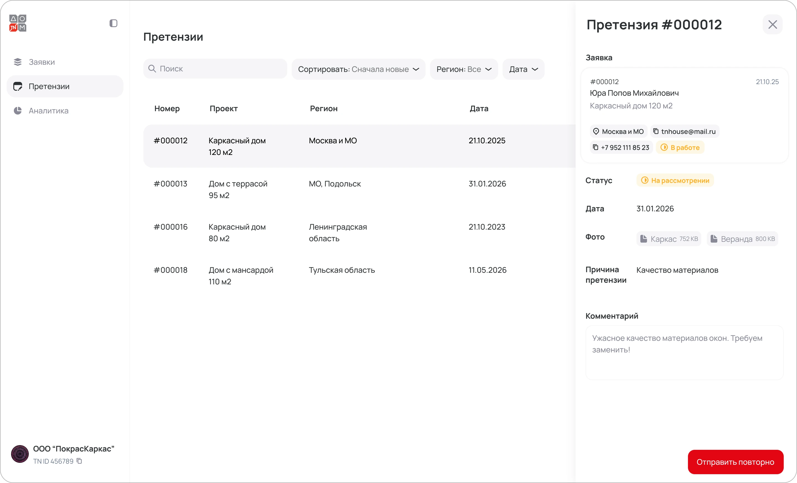
03
Analytics
Period, region, dynamics of applications, reasons for refusals and sources of leads.
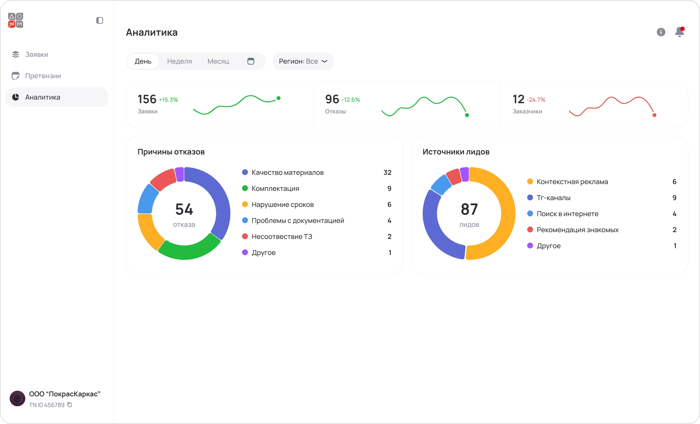
Product hypotheses
What required verification after the hackathon
Managers will accept a single register
If all calls are available in a familiar structure, the account will become the main working tool instead of a set of channels.
Statuses will not slow down your work
If you can change the stage and the person responsible directly in the application, the transparency of the process will not increase the processing time.
Analytics will replace manual reports
If events are recorded automatically, the manager will see the reasons for losses without additional reporting from managers.
Key decision
The application has become a single object of the manager’s work
The status of all requests is read in a few seconds.
The manager sees the client, project, region, date and status, quickly changes the view and opens details without losing his position in the general list.
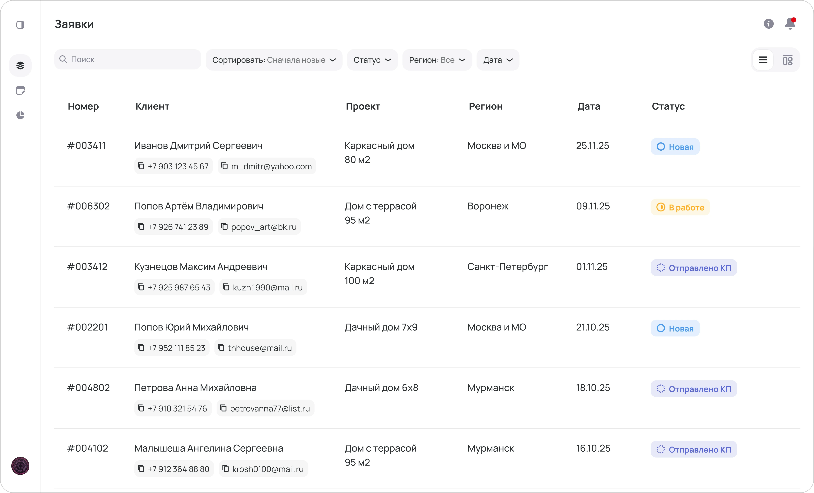
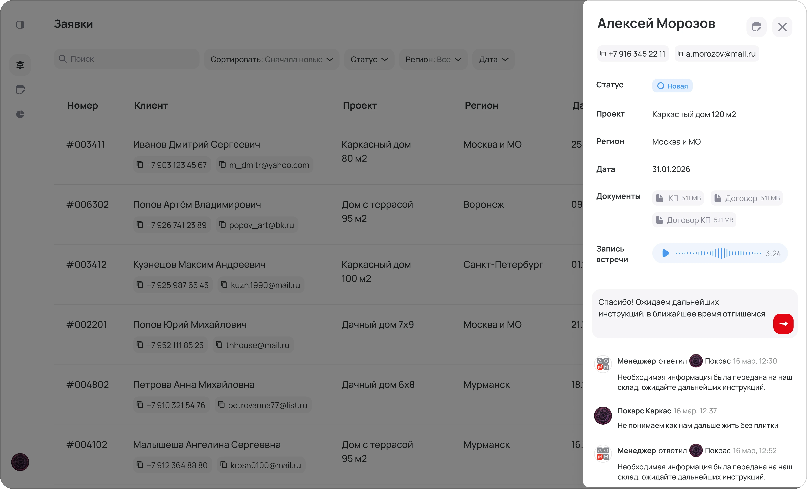
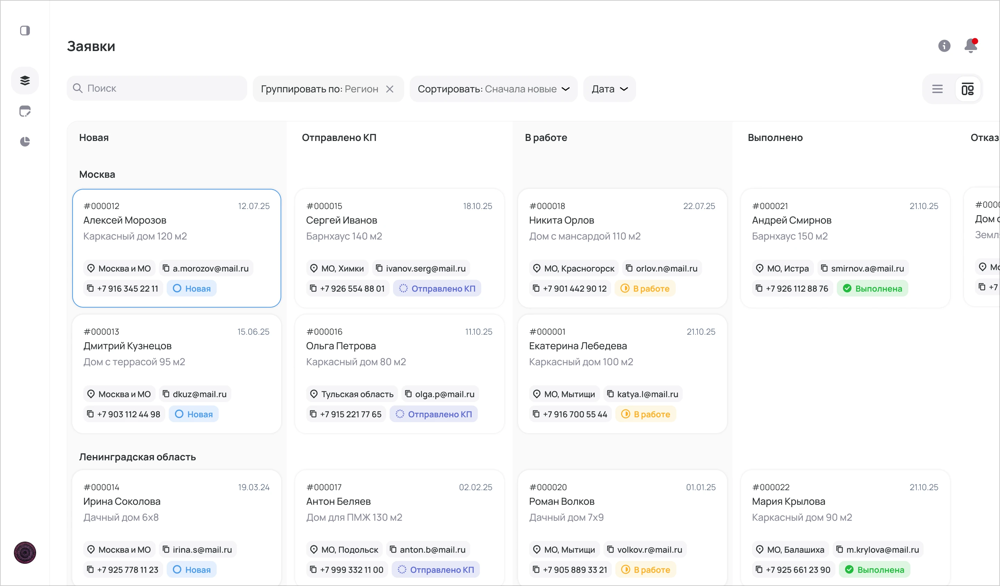
Controversial situations
The claim remains linked to the application and receives its status
The reason for the request, files, photos, comments and status history are collected in a separate module - this way the conflict is not lost in the correspondence and remains controlled.
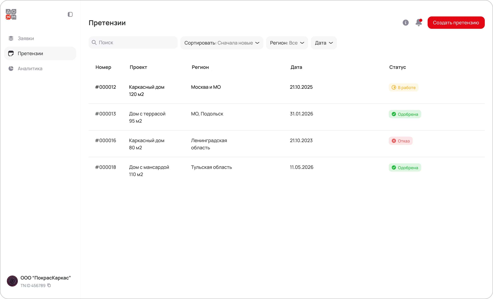
UI-kit and adaptive
The components speeded up assembly and maintained a single interface language
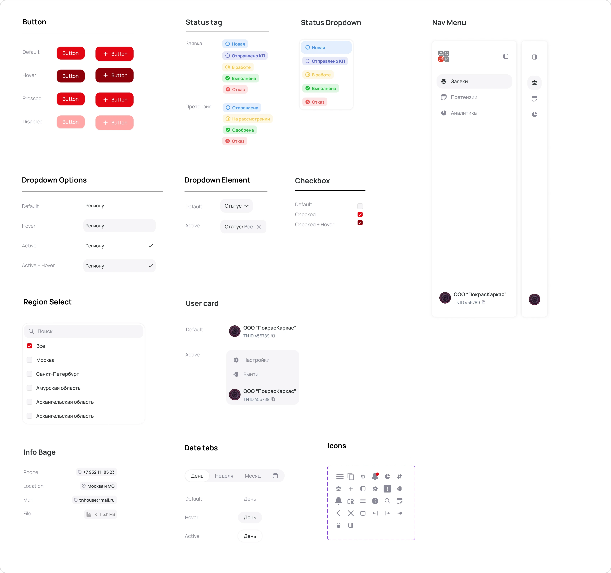
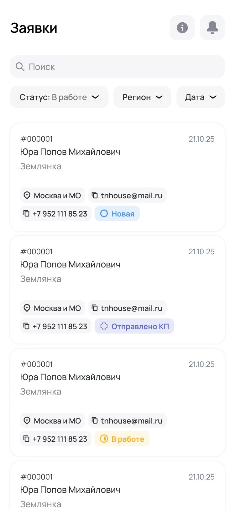
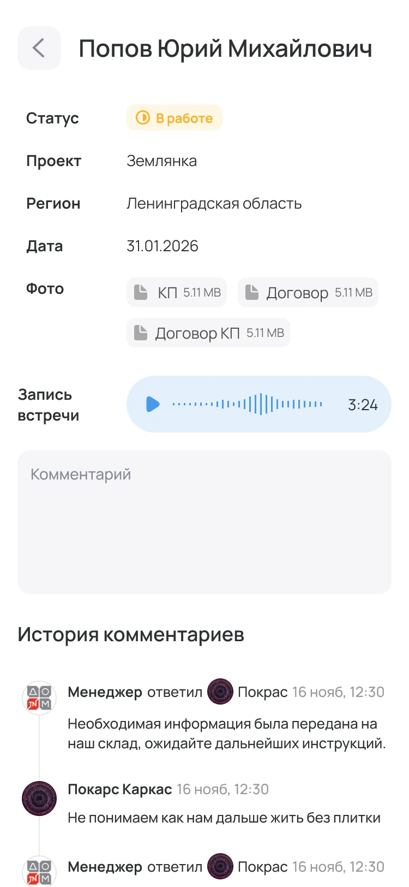
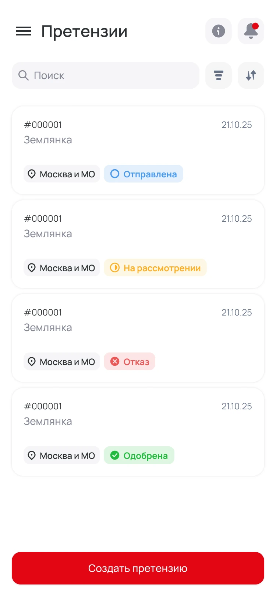

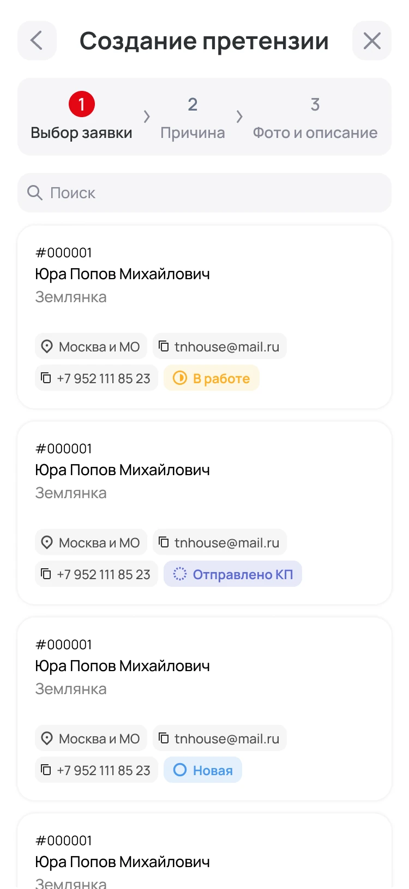
Interface usability tests
Create a new request
The manager filled out the client’s data, selected a project and region, added a comment and moved the application to the next stage.
- Without moderator prompts
- Average session - about 12 minutes
Results4.8/5Flow clarity 4.6/5Form usability 4.7/5Task speed 5/5Willingness to use
10× faster
All five managers completed the scenario and said the unified form was substantially faster than collecting data across chats and separate services.
Winning the product hackathon
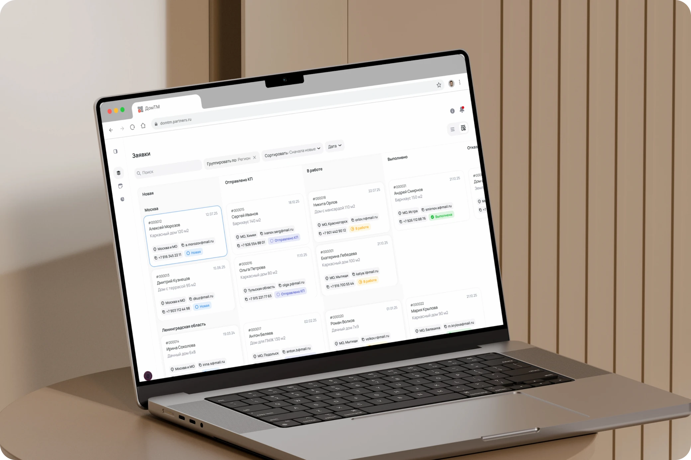
A single claim model, transparent statuses, associated claim scenario, analytics and component basis for product development. The main professional conclusion is that in B2B, reading speed, availability of information and predictability of the process come first.